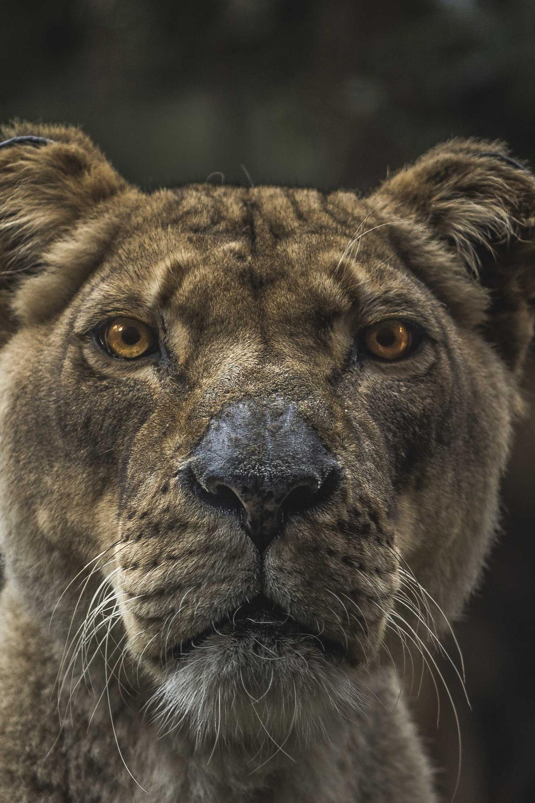

About Me

I am the photographer behind LUMEN, with more than eight years behind the camera.
I began by taking graduation photos for friends and now photograph weddings, portraits, brands and events. I believe good photographs come from noticing the right moment, rather than forcing a pose.
Before a session, we discuss your ideas and choose a style and location together. On the day, you can relax and leave the photography to me.
- More than 8 years of experience and 300 photo sessions
- Clients include coffee brands, independent shops and startups
- More than 80 weddings photographed
- Selected for the 2025 Taiwan Photography Annual Awards